Convierte vídeos, apuntes y documentos en conocimiento revisado y publicado en tu bóveda de Obsidian, con la ayuda de los modelos de IA de tu AI Broker, sin perder nunca el original.
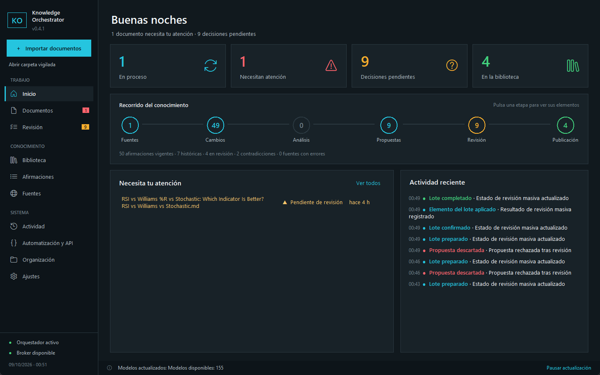
Knowledge Orchestrator es una aplicación de escritorio para Windows que convierte material en bruto —transcripciones de vídeos de YouTube capturadas con el plugin, apuntes en Markdown, textos sueltos o novedades de webs y blogs— en apuntes de estudio bien redactados y en una base de conocimiento de afirmaciones con su evidencia, todo ello guardado en tu bóveda de Obsidian.
La aplicación no ejecuta los modelos de IA por sí misma: prepara las peticiones y se las entrega a tu AI Broker, que decide qué modelo local (Ollama, LM Studio…) las procesa. Después valida lo que vuelve, lo publica y lo mantiene.
| Pieza | Papel |
|---|---|
| YT Capture Plugin | Extensión del navegador que guarda vídeos de YouTube (metadatos y transcripción) como archivos .md en la carpeta vigilada. |
| AI Broker | Servidor de tu red local que recibe las peticiones y elige y ejecuta los modelos. Necesita su dirección y, si lo exige, un token de administrador. |
| Obsidian | Donde lees tus notas. La aplicación escribe en la carpeta de la bóveda; el complemento opcional Knowledge Orchestrator Bridge permite ediciones seguras con Obsidian abierto. |
| Otras aplicaciones | Pueden consultar tu conocimiento o enviar documentos a través de la API local, con credenciales que tú creas y revocas. Por ejemplo, ChatyGPT (capítulo 15.3). |
Es fácil confundir los papeles, porque hay tres sitios con datos. La idea clave: Knowledge Orchestrator es la fábrica y Obsidian es la biblioteca. La aplicación produce y mantiene el conocimiento; Obsidian es donde lo lees y lo trabajas.
| Pieza | Dónde está (instalación de referencia) | Qué contiene y quién lo usa |
|---|---|---|
| Carpeta vigilada | Descargas\YT-Knowledge-Inbox | Las capturas nuevas que esperan a ser procesadas. La aplicación las recoge y las saca de ahí. |
| Datos internos (el motor) | Un disco local, p. ej. I:\KO-datos | La base de datos (estado de cada documento, historial, perfiles, temas, índice de afirmaciones, consumidores de la API), las transcripciones en proceso, las fuentes archivadas, la cuarentena, los fallidos y los registros. Es material de trabajo: no son notas para leer y Obsidian no lo necesita. |
| Bóveda de Obsidian (el resultado) | Puede estar en Google Drive, p. ej. Y:\Mi unidad\Vaults\Conocimiento_Youtube | Las notas publicadas en Markdown, una carpeta por tema (lo que no encaja va a _inbox). Es tu conocimiento propiamente dicho. |
| Copias de seguridad | Una carpeta en la nube, p. ej. ...\Conocimiento_Youtube\.knowledge-orchestrator\copias-periodicas | ZIP restaurables de los datos internos, cada 6 horas mientras la aplicación está abierta (capítulo 18). |
| Término | Qué significa |
|---|---|
| Carpeta vigilada (bandeja) | Carpeta donde la aplicación recoge automáticamente los documentos nuevos. Por defecto Descargas\YT-Knowledge-Inbox. Los archivos aceptados salen de ella; los rechazados van a cuarentena. |
| Captura | Un documento con el formato que genera el plugin: cabecera con contract_version, capture_id, título… y una sección ## Transcripción. Si importas un Markdown o texto normal, la aplicación lo convierte en captura (sin tocar el original). |
| Documento | Cada captura en proceso o procesada. Aparece en la pantalla Documentos con su estado y su línea de tiempo. |
| Tema | Categoría que decide en qué carpeta de la bóveda se publica la nota y con qué perfil se procesa. Se asigna por palabras clave del título, canal o etiquetas. Lo que no encaja va a _inbox. |
| Perfil | La política de procesamiento: qué modelos, qué método (respuesta directa, consenso o automático), privacidad, longitud, presupuesto, revisión humana e instrucciones. El perfil de fábrica se llama Técnico Profundo. |
| Borrador | El apunte generado cuando el perfil exige revisión humana. No se publica hasta que lo apruebas. |
| Nota | El apunte publicado en la bóveda. Tiene revisiones: cada cambio aplicado crea una nueva sin perder la anterior. |
| Afirmación | Un dato concreto extraído de una nota («Python 3.14 se publicó el 7 de octubre de 2025»), con su vigencia y su evidencia. |
| Respaldo | Fuente original la frase aparece en el documento de origen; Enlazada por el modelo el modelo la relacionó con la fuente pero no se pudo comprobar; Solo en el resumen solo consta en el apunte. Solo las respaldadas por la fuente pueden proponer cambios en otras notas. |
| Propuesta | Cambio sugerido sobre una nota existente porque un documento nuevo la confirma, amplía, sustituye o contradice. Siempre muestra «Ahora» y «Propuesto». |
| Fuente vigilada | Una web o feed RSS/Atom que la aplicación comprueba periódicamente para detectar novedades. |
| Política de autoaprobación | Regla que tú autorizas para aplicar sin intervención ciertas propuestas de fuentes concretas. Se crean desactivadas y el control global empieza en pausa. |
| Consumidor de la API | Otra herramienta autorizada a usar la API local, con permisos concretos (leer, preguntar, ingerir, revisar…). |
.error.json que explica el motivo.dist\Knowledge-Orchestrator (o instala con Knowledge-Orchestrator-Setup.exe si se generó el instalador).Knowledge-Orchestrator.exe. Se abre directamente la ventana.python.exe por cada ventana. Es normal: el Python del entorno .venv lanza el Python real como proceso hijo.start_orchestrator.bat (doble clic) python -m knowledge_orchestrator.app --ui (con PYTHONPATH=src y el entorno .venv)
| Elemento | Ubicación por defecto |
|---|---|
| Datos internos (base SQLite, copias, cuarentena, registros) | %LOCALAPPDATA%\Knowledge Orchestrator\data |
| Carpeta vigilada | %USERPROFILE%\Downloads\YT-Knowledge-Inbox |
| Bóveda de resultados (Obsidian) | La que elijas en Ajustes |
| Ajustes de carpetas | %LOCALAPPDATA%\Knowledge Orchestrator\config\paths.json |
| Token del Broker | Dentro de los datos internos (state\credentials), cifrado para tu usuario de Windows |
| Copias periódicas | La carpeta indicada en backup_dir dentro de paths.json (opcional; capítulo 18) |
--root C:\ruta\de\pruebas: todo (datos, bandeja y bóveda) se crea dentro de esa carpeta y no se ingiere tu bandeja real.Si al arrancar la carpeta de datos guardada no está disponible (disco desconectado, sin permisos), la aplicación te ofrece arrancar con carpetas locales sin tocar las anteriores; después podrás volver a elegirlas en Ajustes.
En el primer arranque la aplicación busca el Broker en http://127.0.0.1:8765. Si tu Broker está en otro equipo verás en Inicio el aviso «El procesamiento no está confirmado» y en la barra lateral Broker con incidencia. Es normal: falta decirle dónde está.
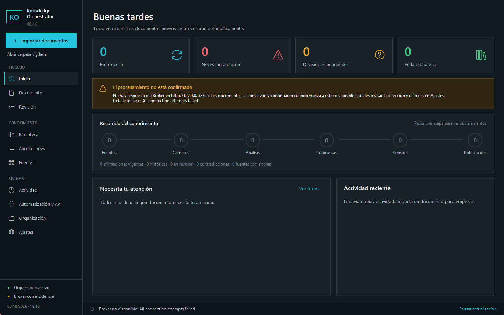
http://192.168.1.52:8765) y el Token si tu Broker lo exige, y pulsa Guardar conexión al Broker. Se aplica al momento, sin reiniciar. En segundos la barra lateral pasa a Broker disponible y bajo la conexión aparece el contrato y los métodos que ofrece.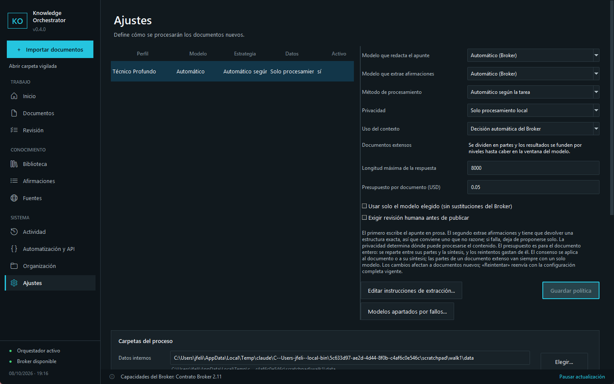
A la izquierda está la barra lateral, agrupada por intención. Los números rojos indican cuántas cosas esperan tu atención en esa pantalla.
| Grupo | Pantalla | Para qué | Atajo |
|---|---|---|---|
| Trabajo | Inicio | Resumen de un vistazo: qué avanza, qué necesita atención y la actividad reciente. | Ctrl+1 |
| Documentos | Cada documento con su estado, pasos, línea de tiempo y acciones. | Ctrl+2 | |
| Revisión | Propuestas de cambio sobre notas existentes y reversión de cambios aplicados. | Ctrl+3 | |
| Conocimiento | Biblioteca | Notas publicadas, con vista previa y acceso a Obsidian. | Ctrl+4 |
| Afirmaciones | Cada dato extraído, con su vigencia, respaldo y evidencia. | Ctrl+5 | |
| Fuentes | Webs y feeds vigilados y sus novedades. | Ctrl+6 | |
| Sistema | Actividad | El recorrido de cada novedad: cambios, análisis, propuestas, decisiones. | Ctrl+7 |
| Automatización y API | API local, consumidores, procesos y políticas de autoaprobación. | Ctrl+8 | |
| Organización | Temas, carpetas, palabras clave y prioridad. | Ctrl+9 | |
| Ajustes | Perfil, Broker, carpetas y puente con Obsidian. | Ctrl+0 |
| Atajo / control | Acción |
|---|---|
Ctrl+O o + Importar documentos | Elegir archivos para importar. |
Ctrl+F | Ir al buscador: el de Biblioteca o Afirmaciones si estás en ellas; si no, el de Documentos. |
F5 | Actualizar la vista ahora. |
| Abrir carpeta vigilada | Abre la bandeja en el Explorador. |
| Pausar actualización (pie) | Detiene el refresco automático de cada 2 s (útil para leer con calma); vuelve a pulsar para reanudar. |
En el pie de la barra lateral ves el estado del servicio (Orquestador activo) y del Broker (Broker disponible / Broker con incidencia), y en la barra inferior el último mensaje de la aplicación.
Hay cuatro puertas de entrada. Todas acaban en el mismo proceso.
Ctrl+O) y elige uno o varios archivos .md, .markdown o .txt (máximo 20 MiB, en UTF-8).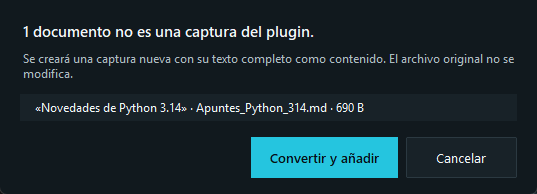
Deja archivos en la carpeta vigilada (o deja que lo haga el plugin de YouTube). La aplicación espera a que el archivo deje de cambiar, lo valida, guarda una copia con huella SHA-256 y lo saca de la bandeja. Si el archivo está bloqueado por otro programa o sigue cambiando, queda una incidencia reintentable. Si no tiene el formato de captura, se aparta a cuarentena y aparece en Necesitan atención como Formato no válido (ver capítulo 8).
Las novedades de webs y feeds RSS/Atom se incorporan desde la pantalla Fuentes (capítulo 13), automáticamente o tras revisarlas, según configures cada fuente.
Otra aplicación con permiso de Ingesta puede enviar un título y un texto a POST /api/v1/documents; el servidor construye la captura y sigue el mismo proceso (capítulo 15).
Los documentos largos se dividen en partes por límites naturales del texto; cada parte se procesa por separado y luego se funden por niveles hasta caber en la ventana del modelo. Tras publicar, en segundo plano, se extraen las afirmaciones de la nota y se comparan con tu conocimiento previo.
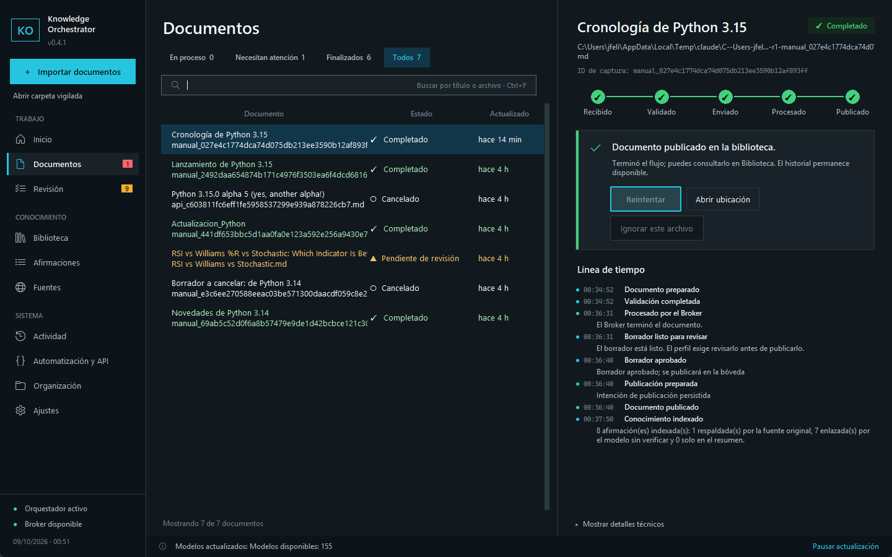
Ctrl+F): por título, nombre de archivo, ruta o estado.Ctrl o Mayús: el botón principal pasa a «Enviar N seleccionados» para reenviar varios a la vez.| Estado | Significado | Acciones |
|---|---|---|
| En cola local | Validado, esperando a enviarse. | Enviar ahora Cancelar procesamiento |
| En cola del Broker · Procesando | El Broker lo tiene; puede tardar minutos con modelos locales grandes. | Cancelar procesamiento |
| Pendiente de revisión | Borrador listo; el perfil exige tu aprobación. | Revisar borrador… Descartar borrador |
| Error | El Broker o la validación fallaron. El texto explica la causa y qué hacer. | Reintentar Ignorar este archivo |
| Formato no válido · Sin transcripción | El archivo de la bandeja no era una captura válida; está en cuarentena. | Abrir ubicación Cerrar incidencia |
| Archivo bloqueado · Archivo inestable | Otro programa lo tenía abierto o seguía cambiando; sigue en la bandeja. | Reintentar Ignorar este archivo |
| Completado | Publicado en la biblioteca. | Abrir ubicación |
| Cancelado · Borrador descartado | No se publicó; el archivo y el historial se conservan. | Volver a procesar (borrador descartado) |
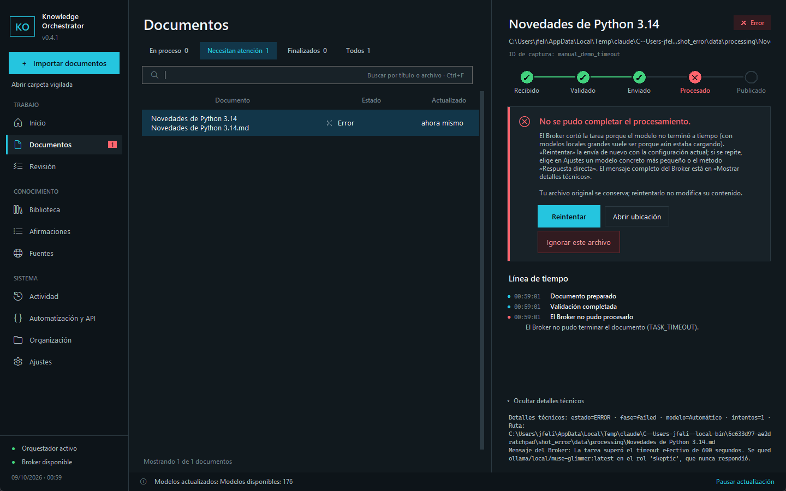
Cancelar procesamiento detiene el documento entero: no se envían más partes y se pide al Broker que pare las que tiene. El original se conserva y lo que llegue tarde no lo reabre. Queda en Finalizados como Cancelado.
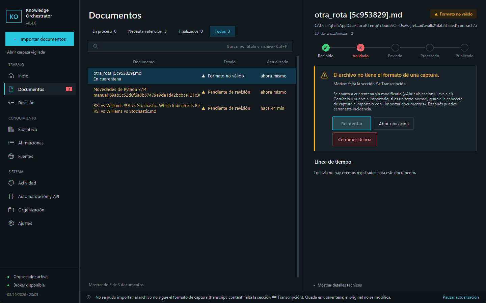
Pulsa Abrir ubicación para ir a la carpeta de cuarentena (failed\contracts dentro de los datos internos), corrige el archivo y vuelve a importarlo. Después, Cerrar incidencia la quita de la lista (el archivo sigue en cuarentena por si lo necesitas).
Si en el perfil marcas Exigir revisión humana antes de publicar, cada apunte queda como borrador. La política se fija al planificar el documento: cambiarla después no afecta a los que ya están en marcha.
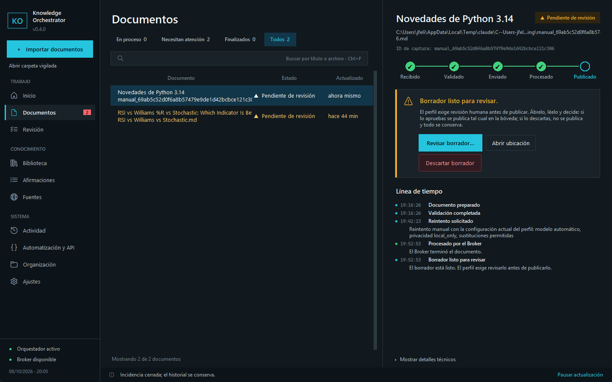
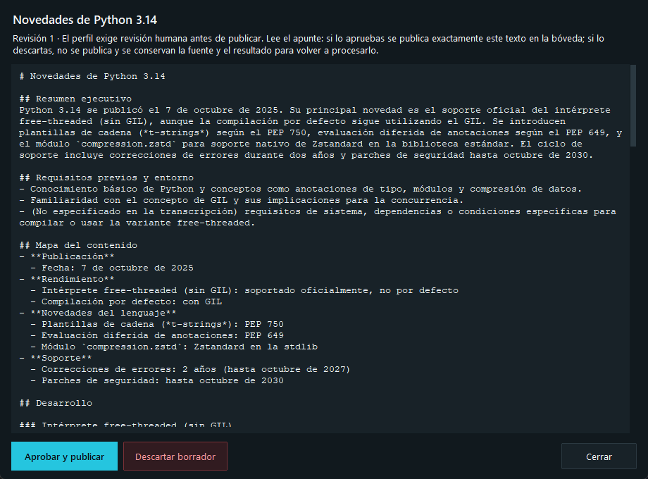
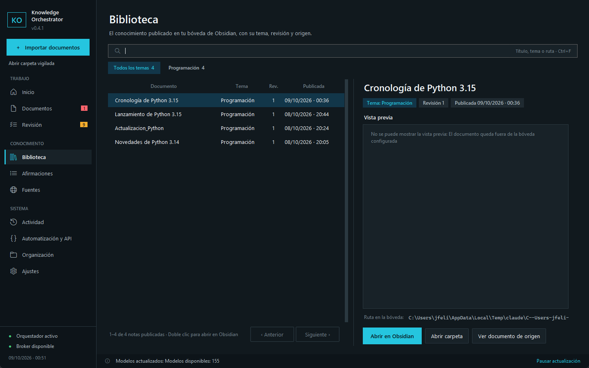
Si editas, mueves o borras una nota publicada directamente en Obsidian, la aplicación lo detecta y activa el botón Notas cambiadas fuera de la app. En el diálogo, para cada nota:
| Acción | Cuándo usarla |
|---|---|
| Adoptar esta versión | Tu edición es buena: pasa a ser la versión registrada de la nota. |
| Localizar el fichero movido… | Moviste o renombraste la nota: indica dónde está ahora. |
| Retirar del índice | La borraste a propósito: deja de considerarse publicada. |
Mientras una nota tenga cambios sin resolver, la API no sirve su contenido (para no entregar algo distinto de lo registrado).
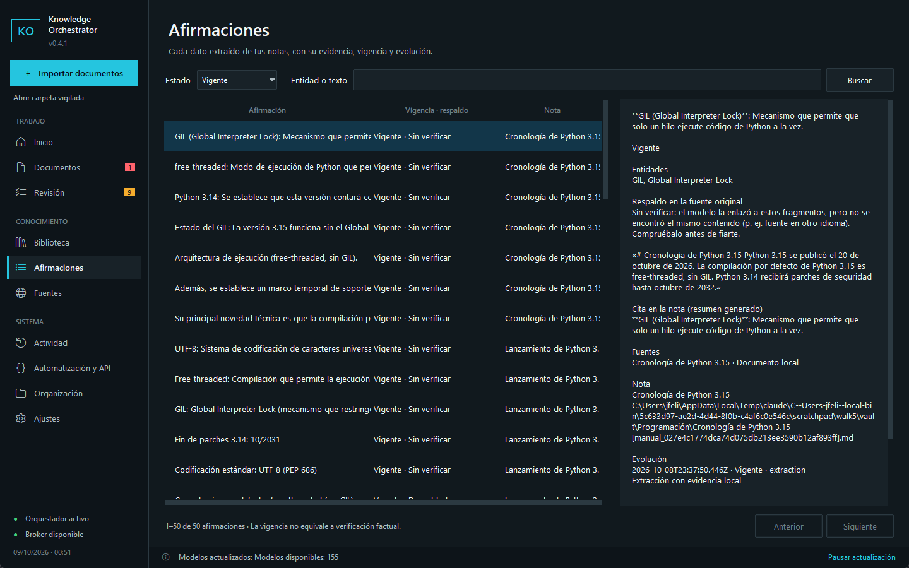
Cada nota publicada se analiza en segundo plano: el modelo que extrae afirmaciones elige frases de la nota y tramos del documento original, y la aplicación comprueba que la evidencia existe en el texto. Así una afirmación inventada no puede colarse con una cita válida.
Cuando un documento nuevo trae afirmaciones respaldadas por su fuente que tocan algo que ya sabías, la aplicación las compara y crea propuestas: confirma, amplía, sustituye o contradice. Ninguna se aplica sola (salvo políticas que tú autorices). Las notas con manual_lock nunca se modifican automáticamente.
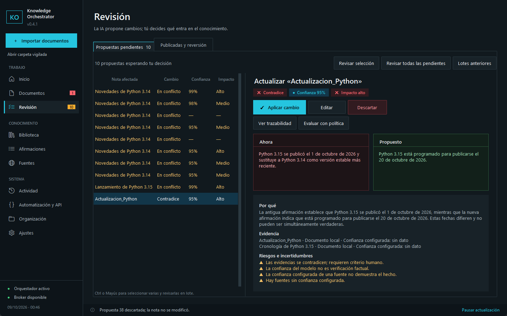
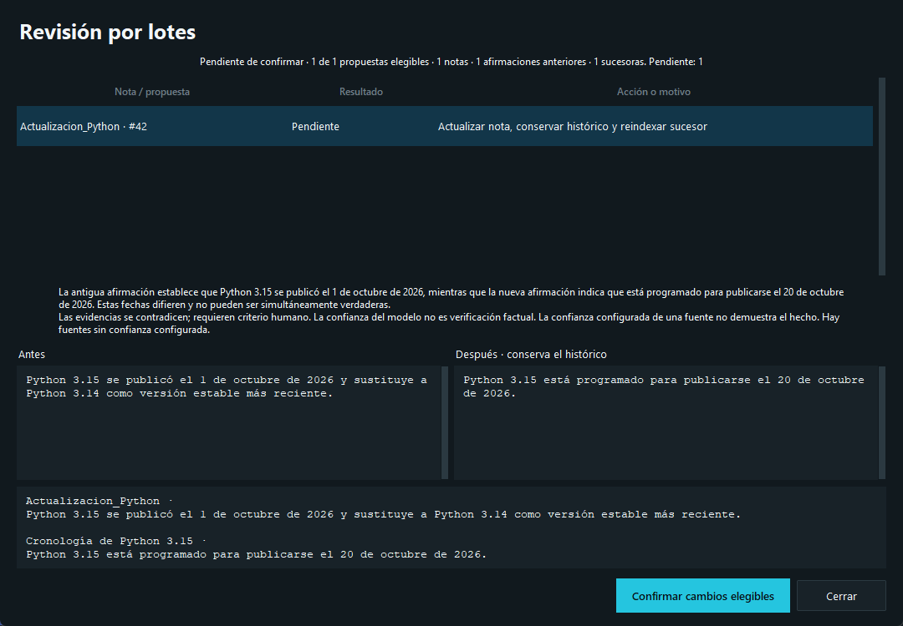
Selecciona varias con Ctrl/Mayús y pulsa Revisar selección, o Revisar todas las pendientes. La vista previa indica cuáles son elegibles y por qué no lo son las demás; al confirmar se aplican solo las elegibles. Lotes anteriores muestra el historial con sus resultados.
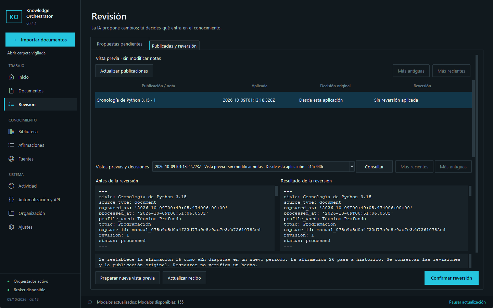
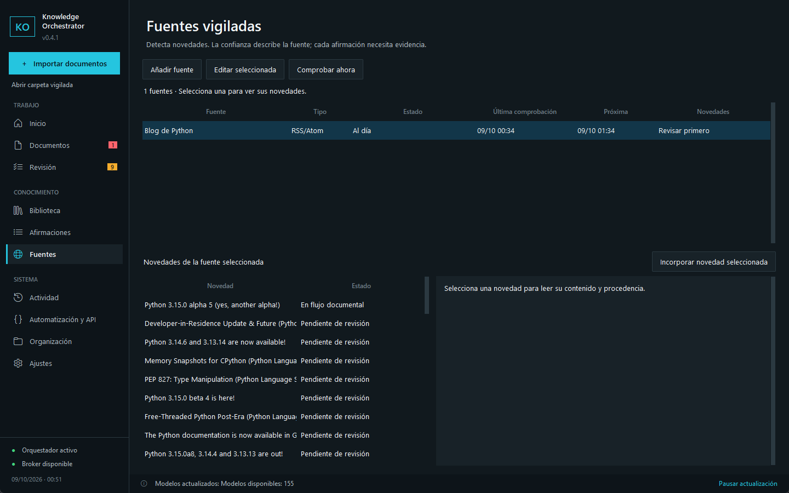
KO_SOURCE_SECRET_…, nunca el token en sí). Guardar fuente.Editar seleccionada cambia la configuración (se valida: una frecuencia no numérica, por ejemplo, se rechaza con un mensaje).
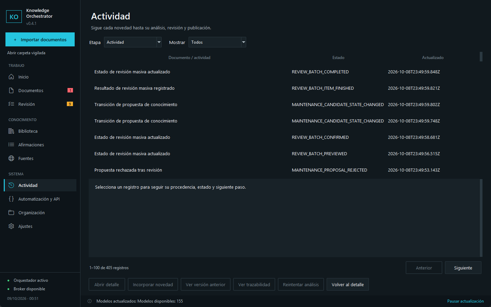
Sigue cada novedad a lo largo de su recorrido. Elige la Etapa (Cambios, Análisis, Propuestas, Histórico de decisiones, Actividad) y qué Mostrar (Pendientes, Con incidencias, Todos). Al seleccionar un elemento ves su detalle y se habilitan las acciones que correspondan:
| Botón | Qué hace |
|---|---|
| Abrir detalle / documento / fuente / revisión | Lleva al elemento en su pantalla. |
| Incorporar novedad | Igual que en Fuentes. |
| Ver versión anterior / Volver al detalle | Compara una nota con su revisión previa. |
| Ver trazabilidad | Historial completo de una propuesta. |
| Reintentar análisis | Repite la extracción o comparación que falló, indicando con qué modelo se hará. |
Los resultados se paginan con Anterior / Siguiente.
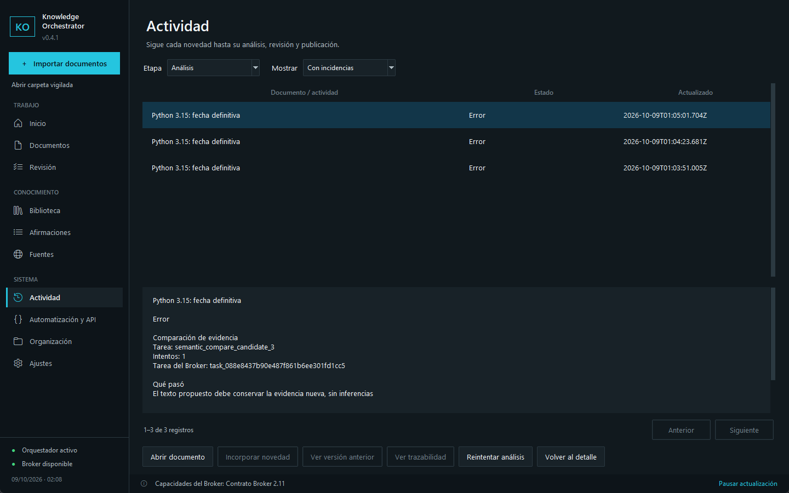
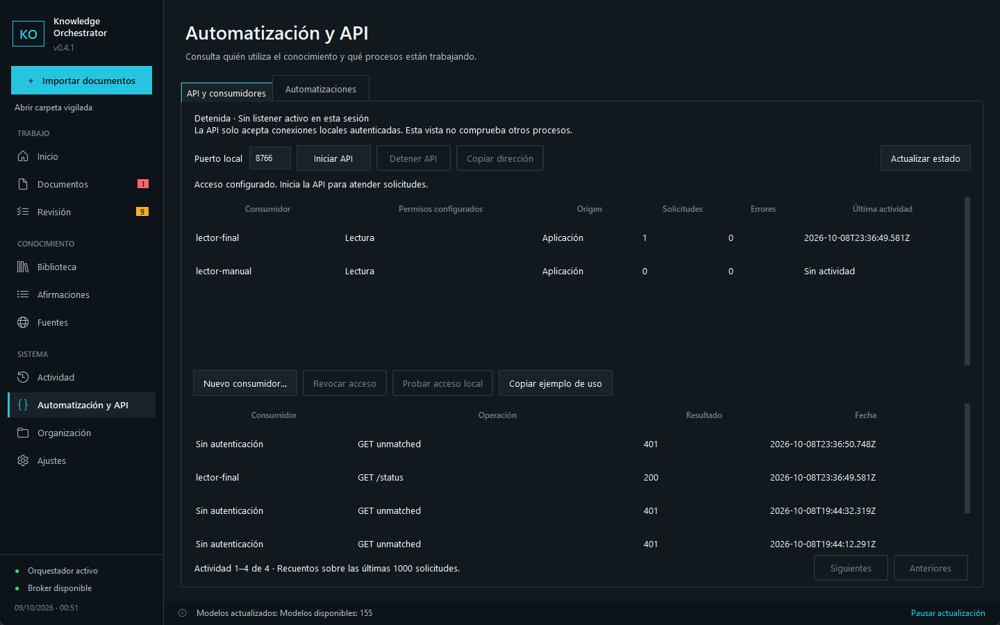
obsidian-lector) y marca solo los permisos necesarios: Lectura (documentos, afirmaciones, búsquedas), Consultas IA, Ingesta (enviar documentos; no publica directamente), Fuentes, Revisión (aprobar o rechazar propuestas) y Gobernanza (automatizaciones y su pausa). Pulsa Crear y mostrar credencial.curl lista para adaptar; Revocar acceso desactiva un consumidor desde su siguiente petición (su actividad se conserva).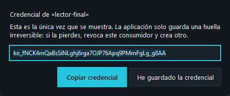
Principales rutas (todas bajo /api/v1, con cabecera Authorization: Bearer <credencial>): /status, /documents, /claims, /entities, /knowledge/{id}, /search?q=, POST /query (pregunta fundamentada), POST /documents (ingesta), /review-tasks. La descripción completa está en /openapi.json y en docs/Knowledge_API.md.
Procesos y estado resume los procesos internos (vigilancia de fuentes, análisis, lotes) y sus últimas incidencias, con accesos a fuentes, análisis pendientes y lotes confirmados.
Políticas y decisiones permite que ciertas propuestas se apliquen sin tu intervención, con varias capas de seguridad:
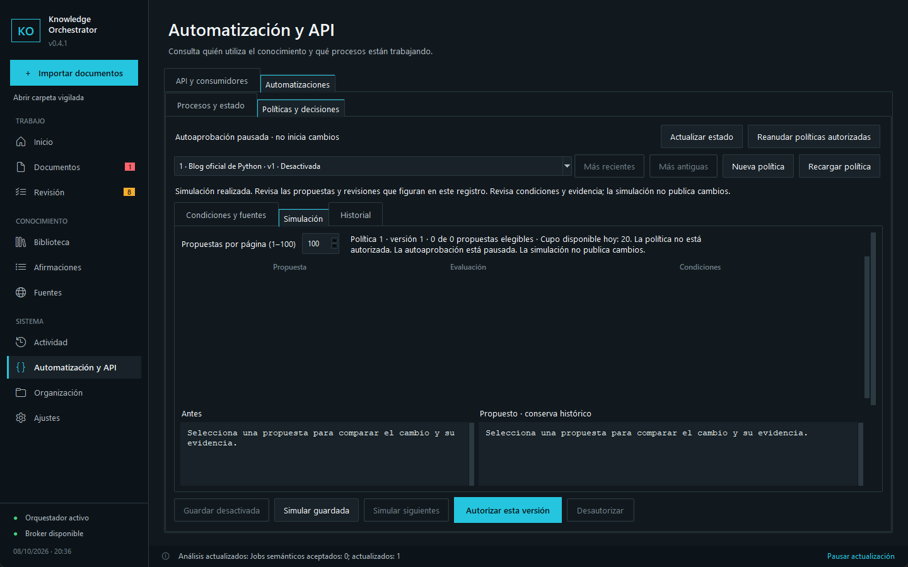
ChatyGPT (desde su versión 0.4.8) puede responder usando todas tus notas publicadas, no unas pocas frases sueltas.
ChatyGPT con permiso Lectura, y copia su credencial.Qué ocurre al preguntar:
[KO doc N: título].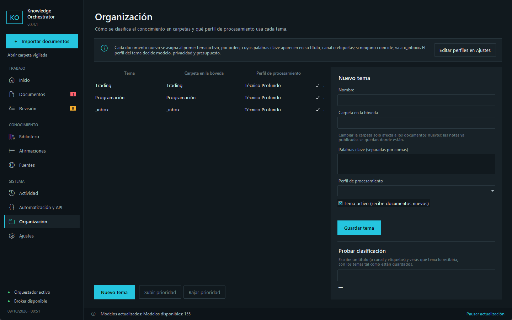
_inbox.Finanzas/Trading), palabras clave separadas por comas, perfil de procesamiento y si está activo. Guardar tema._inbox es la red de seguridad: no se puede renombrar ni darle palabras clave; solo cambiar su perfil.Los errores (nombre repetido, sin palabras clave, ruta no válida) se explican junto al formulario, sin perder lo escrito.
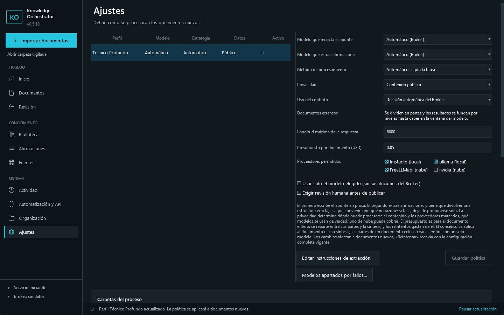
| Campo | Qué decide |
|---|---|
| Modelo que redacta el apunte | Qué modelo escribe la nota. «Automático (Broker)» deja que el Broker elija. Los modelos que el Broker marca como incompatibles o en cuarentena no se ofrecen. |
| Modelo que extrae afirmaciones | Qué modelo hace el análisis estructurado. Mejor uno que no razone. |
| Método de procesamiento | Respuesta directa (un modelo; lo más rápido), Consenso entre modelos (varios proponen y se combinan; más lento) o Automático según la tarea (el Broker decide; puede elegir consenso o agente). |
| Privacidad | Solo procesamiento local (no sale de tu red; sin coste), confidencial, uso interno o contenido público. |
| Uso del contexto | Compresión del prompt (lo decide el Broker por defecto). |
| Longitud máxima de la respuesta | Tokens de salida (por defecto 8000). Los modelos que razonan necesitan más; si eliges uno con poco margen, se te avisa. |
| Presupuesto por documento (USD) | Límite de gasto para todo el documento (partes, síntesis y reintentos). Con privacidad «Solo procesamiento local» no se gasta nada. |
| Usar solo el modelo elegido | Prohíbe al Broker sustituir el modelo por otro. |
| Exigir revisión humana | Cada apunte queda como borrador hasta aprobarlo. |
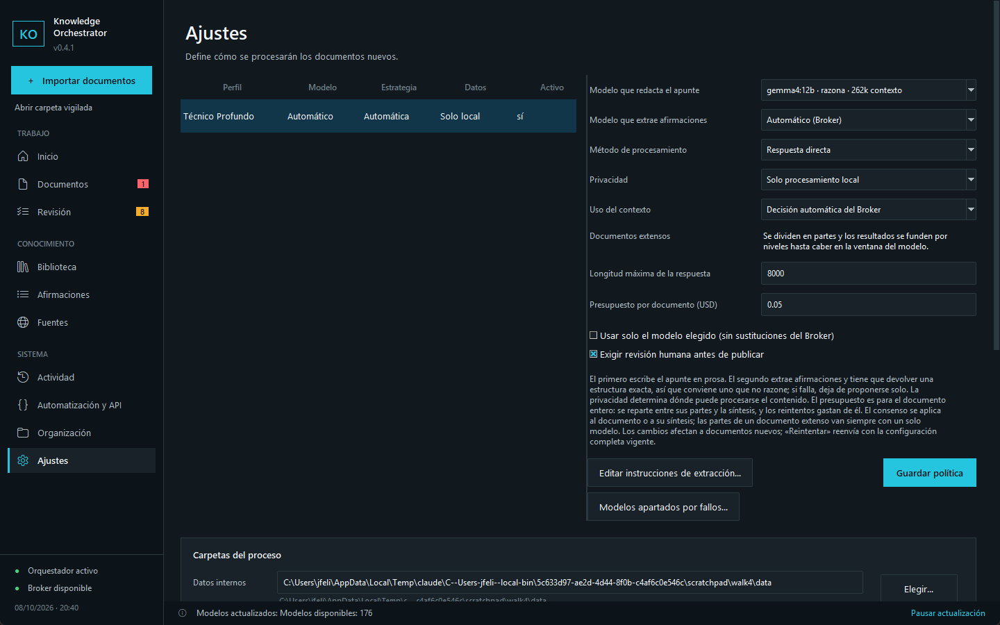
gemma4:12b, unos 3 minutos.granite4.1:30b y qwen3-coder:30b acertaron 5 de 5 comparaciones de prueba; lfm2:24b, solo 2 de 5 (tiende a responder «Confirma» siempre). Si ves comparaciones absurdas, fija aquí un modelo de análisis concreto.Editar instrucciones de extracción… abre las cuatro instrucciones del perfil (criterios generales, documento completo, fragmentos largos y síntesis final). Aplicar cambios y luego Guardar política. Modelos apartados por fallos… lista los modelos excluidos de la elección automática y permite Rehabilitar seleccionado (útil si la causa del fallo ya se corrigió).
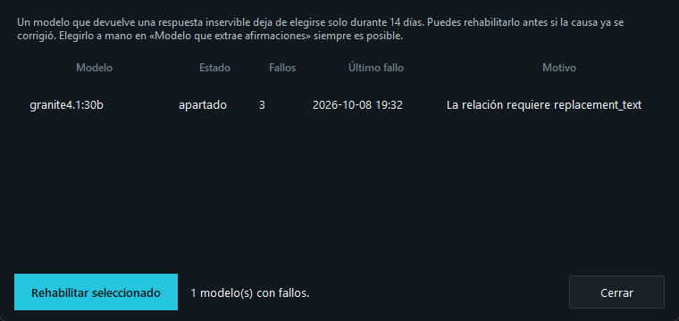
Los cambios afectan a documentos nuevos; Reintentar reenvía con la configuración vigente.
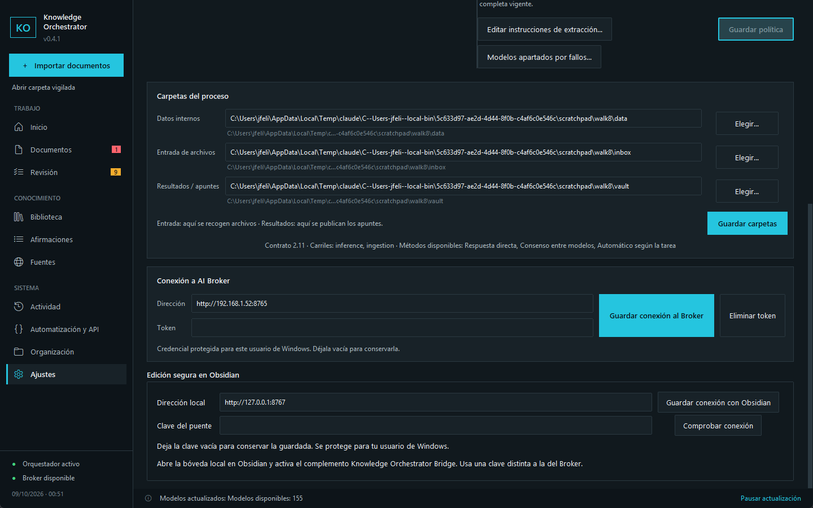
Dirección y token. El campo del token se vacía al guardar (se guarda cifrado para tu usuario); déjalo vacío para conservar el guardado. Eliminar token lo borra. Si el Broker exige token y no está, la barra lateral mostrará «Broker con incidencia».
Datos internos, carpeta vigilada y bóveda, con Elegir…. Se validan al guardar: la bandeja y la bóveda no pueden coincidir ni estar una dentro de otra; la bandeja no puede estar dentro de los datos; la bóveda no puede ser la carpeta de datos. Se aplican al reabrir la aplicación.
backup_dir).Publicar notas nuevas no necesita nada más: se escriben directamente en la carpeta de la bóveda. Pero modificar una nota ya publicada (aplicar una propuesta o revertirla) se hace a través del complemento Knowledge Orchestrator Bridge, que comprueba dentro de Obsidian que la nota no ha cambiado.
obsidian-bridge del proyecto (manifest.json, main.js, bridge-core.cjs, server.cjs, journal.cjs) a <tu bóveda>\.obsidian\plugins\knowledge-orchestrator-bridge\.http://127.0.0.1:8767, la misma clave, y Guardar conexión con Obsidian.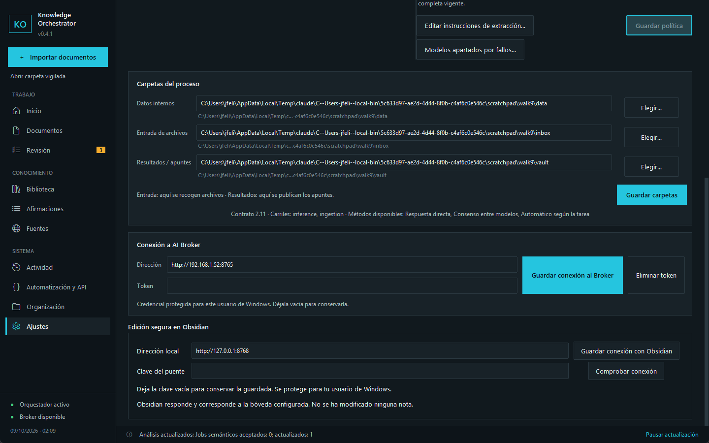
Con el entorno del código (o sustituyendo python -m knowledge_orchestrator.app por la ruta del ejecutable):
| Orden | Qué hace |
|---|---|
--ui | Abre la ventana (el ejecutable lo hace siempre). |
--backup | Copia consistente de la base SQLite en backups\. |
--full-backup | ZIP restaurable con la base, las fuentes archivadas y un manifiesto con huellas (las notas de la bóveda se referencian, no se copian). |
--restore copia.zip --root carpeta_vacía | Restaura un ZIP en una carpeta vacía comprobando cada huella. No sobrescribe nunca. Después hay que volver a configurar Broker y Obsidian (las credenciales no viajan). |
--diagnostics diag.zip | ZIP para soporte con contadores, entorno, configuración y registros saneados (sin base de datos, sin notas y sin el token del Broker). |
--once | Recupera estados pendientes, ingiere la bandeja y termina. |
--api --api-port 8766 | Arranca solo la API y los procesos, sin ventana. |
--root carpeta | Usa otra raíz para todo (pruebas sin tocar tus datos). |
--full-backup antes de actualizar la aplicación o de cambiar de equipo, y guarda el ZIP fuera del disco de datos.Si %LOCALAPPDATA%\Knowledge Orchestrator\config\paths.json contiene la clave backup_dir, la aplicación guarda allí copias automáticas:
{
"data_root": "I:\\KO-datos",
"inbox": "C:\\Users\\...\\Downloads\\YT-Knowledge-Inbox",
"obsidian_vault": "Y:\\Mi unidad\\Vaults\\Conocimiento_Youtube",
"backup_dir": "Y:\\Mi unidad\\Vaults\\Conocimiento_Youtube\\.knowledge-orchestrator\\copias-periodicas"
}
--full-backup, llamado knowledge-orchestrator-full-AAAAMMDDTHHMMSSZ.zip (fecha y hora en UTC). Ocupa unos pocos MB.--restore <zip> --root <carpeta vacía> y apunta «Datos internos» a esa carpeta.--root (pruebas) la copia periódica no se activa.Por ejemplo, de Google Drive a un disco local. La copia integral no incluye los fallidos, los registros ni la credencial del Broker, así que se copian aparte:
--full-backup: crea el ZIP de los datos actuales. Si los datos están en Drive y da «disk I/O error», repite la orden.--restore <zip> --root <carpeta nueva y vacía>: restaura en el destino y reescribe las rutas internas que apuntaban a la carpeta antigua.failed\, logs\, state\credentials\ y state\broker_connection.json. Así conservas la conexión con el Broker sin volver a configurarla.data_root en paths.json a la carpeta nueva (o en Ajustes → Carpetas del proceso) y abre la aplicación.| Qué ves | Causa probable y qué hacer |
|---|---|
| «Broker con incidencia» / «El procesamiento no está confirmado» | El Broker no responde o rechaza la credencial. Comprueba que está encendido y la dirección en Ajustes. Si responde pero rechaza (403/401), el token ha cambiado (suele rotar al reiniciar el Broker): pega el nuevo y guarda. Los documentos esperan y continúan solos. |
| Solo aparece «Automático (Broker)» en los modelos | El catálogo aún no ha llegado (tarda unos segundos tras conectar; si el Broker está ocupado se reintenta cada 30 s). Vuelve a seleccionar el perfil al poco. |
Error «El Broker cortó la tarea porque el modelo no terminó a tiempo» (TASK_TIMEOUT) | Un modelo local grande tardó demasiado (a menudo, cargando). Pulsa Reintentar. Si se repite, en Ajustes elige un modelo concreto más pequeño o el método «Respuesta directa». El plazo actual es de 30 minutos. |
| «El modelo agotó su presupuesto de respuesta razonando» | El modelo pensó tanto que no llegó a escribir. Se reintenta solo una vez con el doble de margen; si vuelve a fallar, elige un modelo sin razonamiento o sube la longitud máxima. |
«Presupuesto agotado» (DOCUMENT_BUDGET_EXHAUSTED) | Con proveedores de pago, el documento gastó su presupuesto. Sube el presupuesto en Ajustes y reintenta. Con «Solo procesamiento local» ya no se reserva dinero: si un documento quedó así con la versión 0.4.0, basta con pulsar Reintentar. |
| Formato no válido / Sin transcripción | El archivo de la bandeja no es una captura. Está en cuarentena: corrígelo o impórtalo como documento normal, y cierra la incidencia. |
| Archivo bloqueado / inestable | Otro programa lo tenía abierto. Ciérralo y pulsa Reintentar. |
| «Ya estaban importados» | Ese documento ya está en la aplicación. Búscalo en Documentos o Biblioteca; para procesarlo de nuevo usa «Volver a procesar». |
| Aviso «La carpeta de datos no es un buen sitio para la base de datos» | Está en una carpeta sincronizada. Traslada los datos a un disco local con el procedimiento del capítulo 18.2: si solo cambias la carpeta en Ajustes, arrancarás con una base vacía. |
| Una nota publicada no se actualiza / la API devuelve 409 | Se editó fuera de la aplicación. Resuélvelo en Biblioteca → Notas cambiadas fuera de la app. |
| Pocas afirmaciones «respaldadas por la fuente» | El modelo extractor parafrasea en vez de señalar frases. Prueba otro modelo en «Modelo que extrae afirmaciones» y usa Actividad → Reintentar análisis. |
| «Aplicar cambio» desactivado: «hace falta el puente de Obsidian» | Configura Ajustes → Edición segura en Obsidian, abre Obsidian con el complemento Knowledge Orchestrator Bridge y vuelve a seleccionar la propuesta. |
| Propuesta «En conflicto» | La nota cambió desde que se preparó. Descártala; si el cambio sigue procediendo, saldrá una nueva tras el reanálisis. |
| Las comparaciones dicen «Confirma» cuando hay contradicción | El modelo de análisis no es adecuado. Elige uno concreto en «Modelo que extrae afirmaciones» (capítulo 17). |
«El Broker ya había recibido este documento con otra configuración» (IDEMPOTENCY_CONFLICT) | Pasa al reprocesar un documento tras reinstalar, borrar los datos locales o usar otra instalación. Pulsa Reintentar: se envía con una identidad nueva. |
| Una propuesta no aparece aunque el documento nuevo contradice a otro | Solo proponen cambios las afirmaciones respaldadas por la fuente. Si el modelo que redacta parafrasea mucho, la aplicación no puede comprobar el respaldo y la afirmación queda como «enlazada por el modelo» (consúltala en Afirmaciones). Un modelo que redacte más pegado al texto ayuda. |
Una consulta por API devuelve 409 KNOWLEDGE_CHANGED | El conocimiento cambió mientras se respondía (se aplicó o descartó algo). Repite la pregunta con una clave nueva. |
| Una fuente muestra «Dirección no pública» | Por seguridad solo se vigilan direcciones públicas de Internet, en los puertos 80 o 443. Una dirección local o de tu red no se puede vigilar. |
| «Iniciar API» no se puede pulsar | Puede haber dos causas. (1) Aún no ha terminado el arranque: abajo a la izquierda pone «Servicio iniciando»; espera a «Orquestador activo» (unos minutos). (2) No hay consumidores: crea uno con «Nuevo consumidor…». «Detener API» y «Copiar dirección» solo se activan con la API en marcha. |
| Otra aplicación dice que Knowledge Orchestrator «no responde» | La ventana está abierta pero la API no. Comprueba en Automatización y API: si aún pone «Servicio iniciando», espera; si «Iniciar al abrir la aplicación» está desmarcado o el puerto estaba ocupado, pulsa «Iniciar API». La API se detiene al cerrar la aplicación. |
| «Documentos» vacío, contadores a 0 y el reloj de la barra lateral parado | Una lectura de la base falló (típico con los datos en una carpeta sincronizada: «disk I/O error») y, hasta la versión 0.4.4, eso detenía el refresco de la ventana. Desde la 0.4.5 se reintenta solo cada 2 s y la barra de estado avisa. Con una versión anterior, pulsa F5 o reinicia. Si se repite, traslada los datos a un disco local (capítulo 18.2). |
| Una consulta por API devuelve 500 de vez en cuando | Fallo momentáneo de lectura mientras los procesos internos escriben en la base, casi siempre con los datos en una carpeta sincronizada. Repetir la petición suele bastar. ChatyGPT ya reintenta solo y, si un documento sigue fallando, lo omite y lo indica. |
| Cada llamada a la API tarda varios segundos | Los datos internos están en una unidad sincronizada o de red. Trasládalos a un disco local (capítulo 18.2). |
| Las respuestas de otras aplicaciones tardan mucho en el Broker | La aplicación envía al Broker muchas tareas (trozos de vídeo, análisis de notas) y el Broker atiende una a la vez. Lo que otra aplicación pida con la misma prioridad espera detrás. Las peticiones interactivas deben ir con prioridad alta (en el Broker, número menor = antes). |
| Hace falta ayuda técnica | Genera --diagnostics y compártelo: no contiene tus notas ni tus credenciales. |
| Quiero… | Dónde y cómo |
|---|---|
| Conectar el Broker | Ajustes → Conexión → Dirección y Token → Guardar conexión al Broker |
| Cambiar de modelo, método o privacidad | Ajustes → perfil → campos → Guardar política |
| Revisar cada apunte antes de publicar | Ajustes → Exigir revisión humana → Guardar política |
| Ajustar cómo se redactan los apuntes | Ajustes → Editar instrucciones de extracción… → Aplicar → Guardar política |
| Rehabilitar un modelo apartado | Ajustes → Modelos apartados por fallos… → Rehabilitar seleccionado |
| Cambiar carpetas | Ajustes → Carpetas del proceso → Elegir… → Guardar carpetas → reabrir (no traslada los datos) |
| Trasladar los datos a otro disco | Cerrar → --full-backup → --restore <zip> --root <nueva> → copiar failed, logs y credenciales → cambiar data_root (capítulo 18.2) |
| Copia de seguridad automática | Clave backup_dir en paths.json: un ZIP cada 6 h, se guardan 10 (capítulo 18.1) |
| Crear, editar u ordenar temas | Organización → Nuevo tema / seleccionar → Guardar tema; Subir/Bajar prioridad |
| Saber a qué tema irá un título | Organización → Probar clasificación |
| Añadir documentos | + Importar documentos (Ctrl+O), carpeta vigilada, Fuentes o API |
| Ver cómo va un documento | Documentos → seleccionarlo → pasos y línea de tiempo |
| Reenviar uno o varios | Documentos → seleccionar (Ctrl/Mayús) → Enviar ahora / Reintentar / Enviar N seleccionados |
| Parar un documento | Documentos → Cancelar procesamiento |
| Aprobar o descartar un borrador | Documentos → Necesitan atención → Revisar borrador… → Aprobar y publicar / Descartar |
| Procesar otra vez un descartado | Documentos → Volver a procesar |
| Resolver un archivo rechazado | Documentos → Abrir ubicación → corregir → importar → Cerrar incidencia |
| Leer una nota publicada | Biblioteca → seleccionar → vista previa / Abrir en Obsidian |
| Arreglar una nota editada fuera | Biblioteca → Notas cambiadas fuera de la app → Adoptar / Localizar / Retirar |
| Consultar afirmaciones | Afirmaciones → Estado + texto → Buscar → detalle |
| Aplicar, editar o descartar una propuesta | Revisión → seleccionar → Aplicar cambio (Confirmar) / Editar / Descartar |
| Decidir muchas propuestas | Revisión → Revisar selección / Revisar todas → Confirmar cambios elegibles |
| Deshacer un cambio aplicado | Revisión → Publicadas y reversión → Preparar vista previa → Confirmar reversión |
| Vigilar una web o feed | Fuentes → Añadir fuente → Comprobar ahora → Incorporar novedad |
| Repetir un análisis fallido | Actividad → Análisis / Con incidencias → Reintentar análisis |
| Dar acceso a otra aplicación | Automatización y API → Nuevo consumidor… → Copiar credencial → al reabrir, la API se inicia sola («Iniciar al abrir la aplicación») |
| Consultar el conocimiento desde ChatyGPT | Consumidor con Lectura → credencial en ChatyGPT (Inicio → Knowledge Orchestrator) → abrir esta aplicación (la API se inicia sola) → casilla «Knowledge Orchestrator» en el chat |
| Quitar acceso | Automatización y API → seleccionar consumidor → Revocar acceso |
| Automatizar cambios de una fuente fiable | Automatización → Políticas → Nueva → Guardar → Simular → Autorizar → Reanudar |
| Parar toda automatización | Automatización → Políticas → Pausar autoaprobación |
| Hacer copia de seguridad / restaurar | --full-backup / --restore zip --root carpeta_vacía |
| Pedir ayuda técnica | --diagnostics diag.zip |